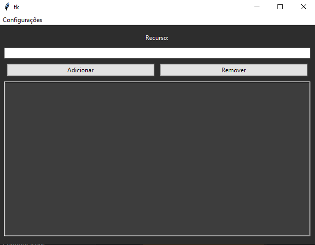

SOBRE MIM
Olá! Sou Sindi, uma mulher trans que oferece serviços de freelancer para pessoas físicas e jurídicas. Meu trabalho abrange desde a criação de posts para redes sociais até o desenvolvimento de sites e sistemas. O mercado de trabalho atual é bastante hostil com pessoas trans, então, se tiver interesse em me contratar, minhas redes estão logo abaixo.
- Linguagens: Python, JavaScript, C++, C
- Frameworks: Bootstrap, Flask, Tkinter
- Ferramentas: Git, GitHub, VS Code
Programação
PROJETOS
Projeto 1: Template de player de música
Um template de player de músicas totalmente estilizado.
Tecnologias: HTML, CSS, JavaScript e Google Fonts.
Projeto 2: Software de Gerenciamento de Recursos
Um sistema para fazer a gerência de recursos, podendo adicionar, atualizar, e deletar os mesmos.
Tecnologias: Python e Tkinter.
CONTATO
Conecte-se comigo neste espaço digital: